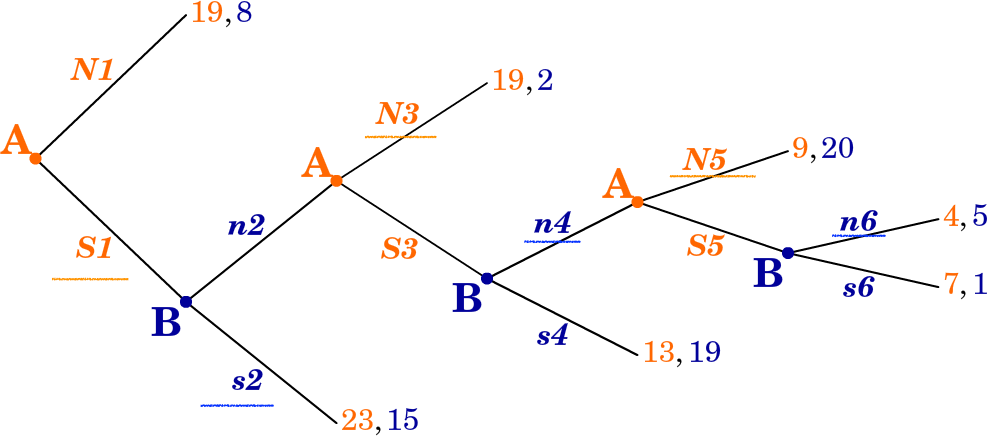

13 Game Theory [(2-3 hours), NS Chapter 5 and additional concepts/readings below] (L11)
13.1 Lecture (2-3 hours) - Game theory; coverage outline
NS: chapter 5
5.2 Basic concepts
Additional to text: Dominance, rationalizability
5.3 Equilibrium
- no focus on mixed strategies
5.4 Illustrating basic concepts Note: Read application from a beautiful mind!
5.5 Multiple equilibria
5.6 Sequential games
Seventh problem set: Game theory (chapter 5, plus a few additional concepts covered in lecture)
- We will not cover the continuous action space, for time constraints
- Experimental evidence (and evidence from the real world); supplements
Putting this in the context of this Module:
Basic tools, the economic approach
The simple classical model, welfare results
Market failures (Monopoly, Public Goods)
Extensions of simple model: ‘Die roll’ Uncertainty
\(\rightarrow\) and now Strategic uncertainty \(\rightarrow\) Game Theory
Finally, behavioural economics
Note: Time permitting, in the latter part of these lecture we will play real and hypothetical games. I will pay small amounts of money. It will be more fun if you have the clickers available and the chat window open/available
‘ILO: Module-specific skills’
detailed knowledge and understanding of intermediate microeconomic theory … apply economic reasoning to the analysis of economic questions and policy
\(\rightarrow\) Game theory is core
Many of you have seen game theory before; we will be more precise here, and introduce several concepts you have not seen before
Skills:
…value of using economics in assessing the external environment for business decision-making
communicate concepts/definitions/arguments in writing
… analytical thought and reasoned discussion
13.2 Basic concepts (strategic interaction, elements of a game))
Previous: Each individual (consumer, firm, etc) takes all others’ choices as given
- market price, demand curve, etc.
Now: Consider ‘strategic interaction’
- My best choice may depend on your choice
- And vice versa
- Sequential games: My earlier choices may change your later choices
13.3 Some examples
Is it better to get lunch at Comida or Pret?
What if your friends are going to Comida?
What if everyone and her cousin are going to Comida, so the queue is miles long?
What should Tim Cook charge for his new Iphone?
Does it depend on whether Samsung and LG…
… Sell their phones for £200, or £1000, or go out of business?
Think about:
Find a situation in business, government, fiction, history or your own life …
where one party’s optimal choice depends on what another party does.
Write it down, give 1-sentence explanation of why it involves ‘strategic dependence’
Some possible examples:
Life:
- Ask out your crush or not?
Politics:
Country makes war or peace? Soldiers fight or run away?
Run for office or not? Party contests a seat? If so, how much to spend on campaign?
Standard Economics:
Amount to bid at a first-price auction?
Whether Firezza opens a new branch in Exeter, and where?
How hard to work towards a promotion at your job?
Very interesting problems, does Econ and Game Theory have the solutions?
13.3.1 What game theory can do (wet blanket)

- Gives us a language and framework for analyzing strategic situations
- ‘solution concepts’ make ‘predictions’ under given assumptions
- ‘equilibrium’ defined as a baseline
- David says: Overrated as a tool for predicting how people/firms will actually behave
It often makes multiple predictions, or predicts ‘mixed strategies’ (randomisation). Real-world and experimental choices are often/arguably predicted poorly by classical game theory. For example, standard game theory says chess has a pre-determined outcome and is a bit boring (ok, you may agree about the latter).
13.3.2 Four elements describe a game
- Players
- Strategies
- Payoffs
- Information
- Players
- the decision makers in the game
\(2, 3, <br> \bigskip, N\) players
Who are the players in Chicken? 1. The north-facing car ‘North’ and 2. the south-facing car ‘South’
- Strategies
- a player’s choices in a game (at each ‘decision node’)
- in simple games the same as actions
- may be a plan contingent on what another player has done
- may involve randomization
Strategies/actions in Chicken? For both N and S, two actions – Pull-off, Straight.
- Payoffs
The utility to each player arising from the combination of each player’s strategies (and chance) in the game
May include both ‘money earned’ and other considerations; all this is summarised in the payoff numbers
The goal of each player is to obtain the largest payoff that she can obtain (not just to ‘win’)
Note: E.g., each player prefers to get 2 in utility and have the other player get 8 than for both to get 1
Note: In this context it is typically not helpful to complain ‘I don’t think players will maximise their payoffs, because they also care about how others do, etc.’ Whatever it is they care about can be expressed in the theoretical payoffs.
However, these concerns are relevant to experiments that may incorrectly assume participants are maximising only their monetary payoffs.
Payoffs in chicken?
Both pull-off \(\rightarrow\) Tie
N Straight, S pulls off \(\rightarrow\) N ‘wins’, S ‘loses’
N pulls off, S straight \(\rightarrow\) N ‘loses’, S ‘wins’
Both straight \(\rightarrow\) crash
To convey this game payoffs must follow: Win \(\succ\) tie \(\succ\) lose \(\succ\) crash
Example of payoffs in Chicken (as matrix)
- Information
what each player knows, at a particular point in the game, about payoffs and previous actions
- For sequential games, players may or may not know other players’ previous actions
(in this module we will only cover the case where they do know previous actions taken)
13.4 Illustrating Games
13.4.1 The Prisoners’ Dilemma: Normal form
The original story: Two individuals are arrested for a crime. They both know that they can only be convicted for a lesser crime, for which they get 2 years in jail. DA (Chief Crown Prosecutor) puts them in separate rooms and offers each the same deal. If you confess and your partner stays quiet you will only get 1 year in jail and they will get 10 years. If you both confess you will each get 3 years.
What would you do? What would most people do? What does game theory predict?
Which outcome is definitely NOT Pareto-optimal (for the prisoners)?

Normal form payoff matrix (also called ‘matrix form’)
Payoff convention: listed in the order (row’s payoffs, column’s payoffs)
A Prisoner’s Dilemma be like
Two Players: (A and B, row and column, whatever)
Strategies (Actions): ‘Cooperate’ (C) or defect (D)
In normal form:
To be a prisoner’s dilemma game the payoffs must satisfy \(T > R > P > S\)
I.e., Temptation \(>\) Reward \(>\) Punishment \(>\) Sucker
13.4.2 The Prisoners’ Dilemma: Extensive form

- Above: oval (usually dashed lines) for ‘information set’
- B may ‘move second’ but he doesn’t know A’s move (which side he is on), so it’s as if simultaneous
- Order only matters if you observe earlier action
- Typically: extensive form for sequential games, normal form for simultaneous games
Note: This fancy terminology seems confusing and unnecessary. The reason for it involves more formal definitions of ‘extensive’ and ‘normal’ games and some deeper technical issues that we skip here.
Common knowledge
- What all players know, and
- all players know that all other players know,
- and all players know that all other players know that all other players know,
- and all players know that all other players know that all other players know that all other players know,
etc.
Note: By the way, we always assume that the rules of the game are common knowledge.
Why is common knowledge important?
Among other things, you may be stuck on an island ‘with 100 blue-eyed people, 100 brown-eyed people, and the Guru’ - XKCD_link - XKCD solution link - Rob Heaton version, more violent - Ted-ed video
Warning: this puzzle will do your head in

- Island with 1000 people.
- 100 of them have blue eyes, 900 have brown eyes
- There are no reflective surfaces
- By custom or law:
- He who know own eye colour must commit suicide the next day in the town square
- No one can discuss another person’s eye colour.
- American tourist visits, says “It’s so nice to see one or more people with blue eyes in this part of the world”.
Q: What effect, if any, does this faux pas have on the island?
Ans: If his statement is ‘common knowledge’
then all 100 blue-eyed people will kill themselves on day 100 after the speech.
- A’s Best Response (BR) to strategy S:
A strategy for player A that gives him the highest payoff of all his possible strategies, given that the other player(s) play S
Note: The BR is a function of the others’ strategies S; it may take a different value for each strategy the others play.
13.5 Dominant, dominated strategies and rationalizability
Note: Iterated strict dominance and rationalizability are NOT covered in the text, but I want you to learn it. As a prediction it is much easier to justify than Nash Equilibrium.
- Dominant strategy
- A single strategy that is a best response to any of the other player’s strategies.
- A simple prediction: a ‘rational’ player will play a dominant strategy, if she has one.
- Dominated strategy (not in text!)
- Strategy A is dominated by strategy B if B yields higher payoffs for any of the other player’s strategies
- A simple prediction: a rational player will never play a dominated strategy
Why?: because a dominated strategy cannot be optimal for any belief about what the other player(s) will do
Note: With only two strategies to choose from these concepts are the same. With more than two, if there is a Dominant strategy this means that all other strategies are dominated by it. We see this in examples below.
- Prediction of ‘players play dominant strategies’
- in Prisoner’s dilemma
- In general, this may have no clear prediction

Consider: What does ‘players play dominant strategies’ predict above? What about ‘players never play dominated strategies’?
13.5.1 Rationalisability/ Iterated strict dominance (not in text!)
Extending this …
the players are rational.
We know rational players will not play dominated strategies The players themselves know this.
The players know all other players are rational. The players know all players know all players are rational. The players know (all players know … ad infinitum) all players are rational.
- Thus the players know what the other players will never do, and eliminate these from consideration
- The players will not play a strategy if another strategy is always better against this reduced set of possibilities
- Etc.
This process is called ‘Iterated Strict Dominance’ (ISD) We will call strategies that survive ISD ‘rationalizable’ strategies
Adv: There are differences between ‘rationalizable’ and ‘survives ISD’ but for our purposes these are the same
ISD example; may yield a unique prediction


- But there may be no dominated strategies
- or ISD may leave many possibilities

13.6 Equilibrium
Market equilibrium (review): given the equilibrium price and quantity, no market participant has an incentive to change his or her behaviour.
In strategic settings, a similar concept:
- Nash equilibrium (NE)
- A set of strategies, one for each player, that are best responses against one another
If I play my BR to your chosen strategy and you’re playing your BR to mine, neither of us has an incentive to deviate — an equilibrium.
All games have at least one Nash equilibrium
- But it may be an equilibrium in ‘mixed strategies’ (involving randomisation)
Caveat: we might not expect such play to actually occur (particularly not in one-shot games)
In fact, 2-player games will have an odd number of equilibria; you can see this by looking at the crosses of the BR functions
13.7 Two ways to find the Nash equilibrium (NE)
- Inspection: Check each outcome one by one. See if either player has an incentive to unilaterally deviate. If not, it’s an equilibrium.
- Underline method: For each player underline the payoff he would get if he played his best response to each of the other player’s actions. Any outcome where there are two underlines is the outcome of an equilibrium strategy profile.
Note this is the same ‘prediction’ as dominant strategies, but the interpretations are different; This is not by accident, there is a general result…
Recall again that the NE, and the prediction of ‘players play dominant strategies’ (also ‘rationalisability’) yields the single outcome that is clearly NOT pareto optimal. Lesson group and individual interests don’t always align
Find equilibrium via each method:
13.8 Relationship between dominant strategies, rationalisability, and Nash equilibrium
If eliminating dominated strategies yields a single prediction for each player, these strategies are a Nash equilibrium.
Same holds for eliminating by iteration (rationalizability) … if it leads to a unique prediction, it’s a NE.
But not every Nash equilibrium involves dominant strategies
13.9 Efficiency and the PD (redux)
Lesson: The group interests and individual interests do not always align
If the players were allowed to communicate what would seem to be the best outcome?
Both staying silent would be better for both than the outcome in the NE: 2 yrs vs. 3 yrs
- But binding agreements are not allowed, and communication should not help
13.10 Coordination and anti-coordination games
13.10.1 Coordination: Battle of the sexes (BOS)

- to make it more PC, assume it is a very violent ballet and a very gentle boxing match
13.10.2 Anti-coordination: Matching pennies (odds/evens)

Note: Underline best responses, show no pure strategy NE here
13.11 Mixed strategies
Note: Please know the basic principles; you don’t need to mixed strategies*
- Pure strategy
- Consists of a single action played with certainty
- Mixed strategy
- Assigns a probability to each possible action
Remember: there is always at least one NE. If there is no pure strategy NE, there will be a NE in mixed strategies.
13.11.1 Matching pennies: mixed strategies
If you choose heads/tails half the time then I’m indifferent between heads or tails. Thus, choosing heads half the time is among my best responses.
If I choose heads half the time then you’re indifferent between heads/tails. Thus choosing heads half the time is among your best responses
So, technically, each of us choosing heads half the time is a NE. (But it is called a ‘weak’ NE because either of us would do no worse if he deviated alone)
13.11.2 Battle of sexes: mixed strategies
Note: Wife wants to end up at the same place as her husband but doesn’t know where he is going.
- If she believes that he will always go to the ballet she should always go to the ballet.
- If she believes he will always go boxing, she should go boxing.
- What other beliefs may she have?
We want to derive the best response functions, and find the intersection(s) of these.
Let \(h\) represent the probability husband chooses Ballet
Wife’s BR:
- Wife chooses Ballet iff her Expected payoff of Ballet > Expected payoff of Boxing
I.e., \(2h > 1- h\), i.e, \(h > 1/3\)
- Thus, wife goes to Ballet if she believes husband goes to Ballet more than 1/3 of the time
- If she thinks he goes below 1/3 of the time she goes to Boxing
- If she thinks he goes exactly 1/3 of the time she is indifferent

Note: This plots the value of w that best responds to h; the probability the wife goes Ballet given the probability the husband goes Boxing.
Let w: probability wife chooses Ballet
Husband’s BR:
- Husband chooses Ballet iff his Expected payoff of Ballet > Expected payoff of Boxing
- 1w > 2- 2w
- w > 2/3
- Thus, husband goes ballet if he believes wife goes Ballet more than 2/3 of the time
- If he thinks she goes less than 2/3 of the time he goes Boxing
- If she thinks he goes exactly 2/3 of the time he is indifferent


Shortcut: only someone who is indifferent will randomise. Above, \(h=1/3\) makes wife indifferent, \(w=2/3\) makes husband indifferent
13.11.3 What’s all this rot?
- Mixed strategies are not about ‘being unpredictable’; these are one shot games
Some texts and authors make this point about ‘unpredictability’ but others disagree (including myself). Making sure that it is impossible to predict your later play from your previous is only important if you are playing the same game repeatedly, and being observed.
Adv:} extcolor{gray{It makes a bit more sense if we think about ‘populations. Suppose in a population 1/3 of men go to Ballet and 2/3 of women go to Ballet: … these ratios are ’stable’; no reason for systematic changes. On the other hand, if men always went to boxing and women to ballet this is not stable. A husband would be better off going to ballet … so the ratios should change over time.}
13.11.4 Computing payoffs with mixing
- Remember, formally NE specifies strategies (strategy ‘profiles’) not payoffs
- In the BOS the pure strategy equilibria were
- Husband: Boxing, Wife: Boxing
- Husband: Ballet, Wife: Ballet
- the mixed-strategy NE was:
- Husband: go Ballet with probability h=1/3, Wife: Go Ballet with prob w=2/3.
- The payoffs to these were, respectively
- Husband: 2, Wife: 1
- Husband: 1, Wife: 2
- …
- In the BOS the pure strategy equilibria were
Payoff to the mixed strategy:
- Payoffs are utilities, sum utility of each outcome \(\times\) probability of that outcome
- Prob(Both go Ballet) = \(w \times h = \frac{2}{3} \times \frac{1}{3} = \frac{2}{9}\)
- Prob(Both go Boxing) = \((1-w)(1-h) = \frac{1}{3} \times \frac{2}{3} = \frac{2}{9}\)
- Prob(Wife Ballet, Husband Boxing) = \(w(1-h) = \frac{2}{3} \times \frac{2}{3} = \frac{4}{9}\)
- Prob(Wife Boxing, Husband Ballet) = \((1-w)(h) = \frac{1}{3} \times \frac{1}{3} = \frac{1}{9}\)
Thus, under the mixed strategy NE play:
\[U_{husb} = \frac{2}{9} \times 1 + \frac{2}{9} \times 2 + \frac{4}{9} \times 0 + \frac{1}{9} \times 0 = \frac{6}{9} = \frac{2}{3}\] \[U_{wife} = \frac{2}{3}\]
- (Wife’s payoff inferred from symmetry of problem or similarly calculated)
13.12 How do you solve a problem like multiple-equilibria?
Above (BOS), there are three equilibria: both play Boxing, both play Ballet, and the mixed strategy
- Are any of these more reasonable as predicted outcomes?
13.12.1 In-class experiment: BOS & coordination; need 2 volunteers

‘The Big Game’

Outcomes
Recent year (2016)
| Share chose | .. squared | Pay if match | E(Pay) | |
|---|---|---|---|---|
| 1 | 0.26 | .068 | 2 | 0.52 |
| 2 | 0.21 | .044 | 2 | .42 |
| 3 | 0.11 | .012 | 1 | .11 |
| 4 | 0.16 | .026 | 2 | .32 |
| 5 | 0.26 | .068 | 2 | .52 |
| Wtd avg | 0.22 | 0.05 | 0.42 |
13.12.2 Multiple equilibrium and refinements
We refer to refinement criteria and focal points. For example…
‘Choose the equilibrium with the highest payoffs for both?’ In BOS this rules out mixing (payoffs 2/3, 2/3 for h,w respectively). But it doesn’t say whether we should predict Box, Box (payoffs 2,1) or Ballet, Ballet (payoffs 1,2)
Choose the ‘symmetric equilibrium?’ … here, mixing
Choose the one that seems like a ‘focal point’? (remember the ‘big game’)
13.12.3 Is there a focal point?
In-lecture ‘experiment’:
A year after graduating you come back for Alumni Weekend. You are supposed to meet the veterans of this module for a night of festivities but can’t remember where or when. The internet does not exist.
Where do you go? Students: write it down on a piece of paper Now type what you wrote in to the chat window
What if you are meeting for a reunion in New York City, and no one has internet or phone access? Where do you go? Write it down. Type it into the chat window.
13.13 Sequential Games
Note: don’t worry about the ‘normal form’ of sequential games; we will only use the extensive form for these
- How does the Battle of Sexes game change if Wife chooses first, Husband observes her choice, and then he chooses
- What do you think will happen? Vote (clickers):
- A. Wife: Ballet, Husband: Box
- B. Wife: Ballet, Husband: Ballet
- C. Wife: Box, Husband: Ballet
- D. Wife: Box, Husband: Box
- What do you think will happen? Vote (clickers):

Note: Remember, it’s a one-shot game … unrealistic within a marriage of course
- The wife has two strategies: Ballet or Boxing
- The husband has four contingent strategies, but we focus on what he will do in each of his two possible ‘decision nodes’
Notes:
Here we see there is a ‘first-mover advantage’.
We see a very similar strategic concern in other contexts, including ‘which firm enters a market first’. Suppose that if two firms are in a market there will be a price war with consumers as well as a bidding up of input prices and salaries, and both will lose money. Perhaps by being the first firm to enter I ‘scare off the other firm’ and I can keep the profits. The other firm may ‘threaten to enter’ but that would seem to be a non-credible threat! On the other hand, suppose that I know that if I enter first the other firm can ‘learn from my mistakes’ and free-ride off my innovation. Here we would have a ‘second-mover advantage’; but in such a game a BWI may lead to the outcome ‘neither firm enters’!
These concerns also apply to politics, and the games can of course include multiple players
Cameron’s decision to allow a referendum, followed by politician’s (Boris etc) decisions to choose a side?
May’s negotiations with the EU (Barnier), followed by the parliament’s ‘meaningful vote’, followed by ??
US Supreme court fight over Brett Kavanaugh, the sequential decisions of the last ‘swing’ senators
- Proper subgame
- Part of the game tree including an initial decision not connected to another (in an oval or dashed lines) and everything branching out below it.
- I.e., each ‘game’ starting from a point where a player knows where he is (knows previous choices)
Notes: SPNE via backwards induction – essentially requires that each player would act optimally at each of these points
- Subgame-Perfect Nash Equilibrium (SPNE)
- Strategies that form a Nash equilibrium on every proper subgame.
- You can solve for this with ‘backwards induction’ (BWI)
- Solve for best move for last decision node (proper subgame)
- Given these, solve for best response for previous decision node
- Etc.
- Solve for best move for last decision node (proper subgame)
Example: BWI for BOS


Note that the SPNE in a sequential game always involves ‘best responses’. I think this makes SPNE more credible as a prediction in sequential games than NE in simultaneous games.
Formally specify (SP)NE strategies for above game:
NE, not SP: {Wife: Boxing; Husband: Boxing, Boxing}
SPNE: {Wife: Ballet; Husband: Ballet, Boxing}
(reading Husband’s decision nodes left to right; please specify this)
It can get fancier

Note: you can ‘build these games’ on if you like

In ‘normal’ (matrix form), stating complete contingent strategies:

And the ‘abbreviated strategies’; leaving out decision nodes ruled out by a player’s own previous choices as specified in the strategy:

The SPNE; ‘state the complete contingent strategies’
A: S1, N3, N5
B: s2, n4, n6
…
Where actions are stated in the order of the decision nodes for each player
13.14 Repeated games: definite time horizon
2019: NOT covering repeated games, not assessed on these
13.15 Experimental evidence: What is a laboratory experiment in Economics?
E.g., FEELE lab at Exeter
- Real incentives (typically small)
- Typically student subject pool
- No deception protocol


13.15.1 Various experimental goals
- Measure preferences (risk, time, social preferences…)
- Asses theoretical predictions (classical and behavioural), including game theory
- Also see ‘likely’ outcomes where theory has no prediction or predicts multiple equilibria
- Critical to assert ‘control’ over payoffs for this
- Understand cognitive processes in economic realm
- ‘Test’ institutions and mechanisms (e.g., auctions, markets)
13.16 Laboratory evidence 1: Prisoners’ dilemmas
Cooper et al (1996)
- Players cooperated even in anonymous ‘one-shot’ games (different opponents each time)
- Cooperation declines somewhat over time, but not to zero
- Mix of other-regarding and selfish types
Notes: Results are similar for experiments involving contributions to public goods.some cooperation, declining over time but not to zero, and a mix of players who never contribute and many ‘reciprocal’ types.

13.17 Laboratory evidence 2: Ultimatum game
- Proposer goes first, proposes a split of the ‘pie’, anything between 0%-100% and 100%-0% inclusive.
- Responder can accept or reject and get nothing
Q: What does SPNE predict (use backwards induction)?
Ans: It predicts the proposal offers the lowest (positive) amount and the responder accepts
What happens in experiments?
- 50-50 split is the most common offer
- Responders tend to reject offers giving them less than 30%, even when this is a lot of money
Potential explanations
- Fairness concerns; monetary payoffs may not represent actual payoffs
- Proposers may anticipate this
13.18 Issues in lab experiments
13.18.1 What is being measured?
- PD: Does money measure the true payoffs? Do we have the ‘control’ to test the model?
- Other-regarding preferences; may be unobservable.
- ‘Experimenter demand’: desire to please experimenter, aware of study goals?
13.19 Issues in lab experiments: External generalisability
- Relevance of subject-pool (participants)
- Do they resemble the ‘real world’ group of interest? (e.g., firms, countries, taxpayers, voters, home-buyers)
- Right preferences and experience?
- Relevance of environment
- Are the (small) stakes relevant?
- Are the right ‘environmental characteristics’ present?
- Does the ‘imposed model’ apply?
- Observed self-conscious environment, perhaps made aware of contrasts
Note: a recommended reading is ‘Ten Little Treasures of Game Theory and Ten Intuitive Contradictions’ Goeree and Holt, 2001
If you are particularly interested, skim or read the introduction of any of the ‘Handbooks’ like ‘Handbook of Experimental Economics’